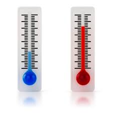

TALLER DE CIENCIAS
Calorimetria

La calorimetría es la técnica utilizada para medir la cantidad de calor transferido en un proceso físico, químico o biológico, a través de un instrumento llamado calorímetro. Este instrumento, generalmente un recipiente aislado, permite medir el cambio de energía en un sistema al realizar el proceso.
Principios de la calorimetría:
Conservación de la energía:
El principio básico es que la energía total del sistema se conserva, por lo que el calor perdido por un objeto se igual a el calor ganado por otro, en un proceso de transferencia de calor.
Medición del calor:
La calorimetría permite determinar la cantidad de calor liberado o absorbido durante una reacción química, un cambio de estado o cualquier otro proceso que implique transferencia de calor.
Calorímetro:
El calorímetro es un instrumento esencial para la calorimetría, diseñado para minimizar la pérdida de calor al entorno y permitir la medición precisa del cambio de temperatura.
Tipos de calorimetría:
Calorimetría directa:
Mide la producción de calor corporal, siendo el método más preciso para determinar el gasto calórico.
Calorimetría indirecta:
Mide el consumo de oxígeno y la producción de dióxido de carbono para estimar el gasto calórico.
Calorimetría a volumen constante:
Se usa para medir el calor de reacciones en sistemas que no cambian de volumen, como la combustión.
Calorimetría a presión constante:
Se utiliza para medir el calor de reacciones que ocurren a presión constante, como la disolución de un sólido en un líquido.
Aplicaciones de la calorimetría:
Determinar la entalpía de reacción:
Permite calcular la cantidad de calor liberado o absorbido durante una reacción química.
Determinar el calor específico de una sustancia:
Permite determinar la cantidad de calor necesaria para elevar la temperatura de una sustancia en un grado.
Estudiar reacciones químicas:
Permite estudiar el comportamiento de las reacciones químicas en diferentes condiciones.
Aplicaciones médicas:
Se utiliza para medir el metabolismo basal y el gasto calórico en pacientes.
Aplicaciones en ingeniería:
Se utiliza para el diseño de intercambiadores de calor y otros equipos industriales.